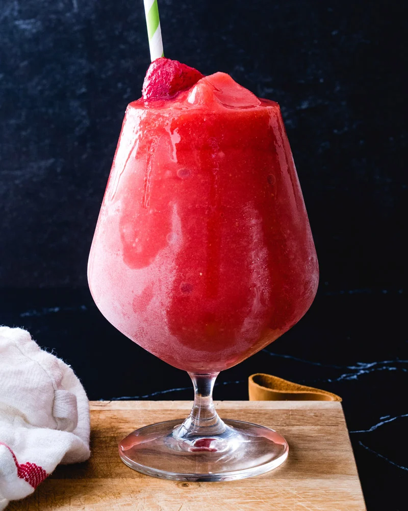

Strawberry Daiquiri

Description
This easy strawberry daiquiri recipe is easy and full of luscious flavor! All you need is 5 minutes and a blender:no need for premade mix.
Ingredients
- 1 pound frozen strawberries
- 6 tablespoons pure maple syrup
- 1/4 cup lime juice
- 1 cup best quality white or light rum
- 1 cup ice
- 1/8 teaspoon kosher salt
Steps
- Place all ingredients in a blender and blend until smooth. Pour into 4 glasses and enjoy.